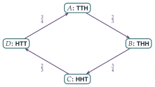

STEP III 2001, Question 13
Read the question before you go on. It is in the STEP Support Programme’s question database: step.maths.org/questions/01-s3-q13
The hook
You and a friend each choose a sequence of three coin tosses, and a coin is tossed until one of the sequences appears. Every sequence of three tosses is equally likely to occur at any given moment, so surely every choice is equally good? Not at all. Whatever sequence your friend chooses, you can choose one that beats it, sometimes with odds of \(7\) to \(1\).
This is Penney’s game, invented by Walter Penney in 1969. The question shows that \(A\) beats \(B\), \(B\) beats \(C\), \(C\) beats \(D\), and \(D\) beats \(A\): a cycle, like rock–paper–scissors. “Beats” is not transitive. Whoever chooses second can always win in the long run.
Before you start
Suppose the tosses so far end in TT and nobody has won yet. Can THH ever appear before TTH?
From TT, every further T keeps the last two tosses as TT, and the first H completes TTH. For THH to appear we would need a TH, which can only arise from a T followed by an H, and that H already completes TTH. So once TT has occurred, \(A\) wins.
Working it through
Stage 1 States
Neither sequence can be completed in two tosses. After two tosses, what is the next toss’s effect from each state?
Since the game depends only on the last two tosses, we can track the state (last two tosses):
From TT: \(A\) wins (shown above), so \(p_{\mathrm{TT}} = 1\).
From HT: the next toss gives TH or TT, so \(p_{\mathrm{HT}} = \frac12p_{\mathrm{TH}} + \frac12p_{\mathrm{TT}}\).
From TH: an H completes THH (\(B\) wins); a T gives HT. So \(p_{\mathrm{TH}} = \frac12 \cdot 0 + \frac12p_{\mathrm{HT}}\).
From HH: an H gives HH again; a T gives HT. So \(p_{\mathrm{HH}} = \frac12p_{\mathrm{HH}} + \frac12p_{\mathrm{HT}}\), giving \(p_{\mathrm{HH}} = p_{\mathrm{HT}}\).
Stage 2 Solving
Substituting \(p_{\mathrm{TH}} = \frac12p_{\mathrm{HT}}\) into the HT equation: \(p_{\mathrm{HT}} = \frac14p_{\mathrm{HT}} + \frac12\), so \(p_{\mathrm{HT}} = \frac23\), \(p_{\mathrm{HH}} = \frac23\) and \(p_{\mathrm{TH}} = \frac13\). Each of the four starting states has probability \(\frac14\), so \[\mathrm{P}(A \text{ wins}) = \tfrac14\bigl(\tfrac23 + \tfrac23 + \tfrac13 + 1\bigr) = \tfrac23. \qed\]
Stage 3 \(B\) against \(C\)
\(C\) wants HHT and \(B\) wants THH. When does \(C\) win? (Look at what must come just before the first HH.)
If the first two tosses are HH, then the first T after that completes HHT, before THH can appear: \(C\) wins. Otherwise, there is a T somewhere before the first occurrence of HH, and so the first HH is immediately preceded by a T: THH appears at that moment, before HHT (which needs a T after HH). So \(C\) wins only if the game starts HH: \[\mathrm{P}(B \text{ wins}) = \tfrac34. \qed\]
Stage 4 The cycle
The same method (or the shortcut in the What’s Really Going On section) shows that \(C\) (HHT) beats \(D\) (HTT) with probability \(\frac23\), and \(D\) (HTT) beats \(A\) (TTH) with probability \(\frac34\); the last is the mirror image of Stage 3 with heads and tails swapped. So \[A \text{ beats } B, \qquad B \text{ beats } C, \qquad C \text{ beats } D, \qquad D \text{ beats } A. \qed\]

Looking back
Choose the right state. Only the last two tosses mattered, so four states and four equations captured the whole game.
First-step analysis. Each equation conditioned on the next toss: the probability from a state is the average over where the next toss leads.
Look for a decisive event. In Stage 3, “the first HH is preceded by a T” settled the game without equations.
What’s really going on
Why some sequences are better
All sequences of three tosses are equally likely at any given position, and the expected waiting time for each is easy to compute. But the waiting times differ: you wait on average \(8\) tosses for TTH but \(14\) for TTT, because a sequence that overlaps itself (like TTT, where a near miss TTH ruins two tosses of progress) is slow to appear. And in a race between two sequences, what matters is how each overlaps the other. THH beats HHT because every occurrence of HHT (except at the very start) is preceded by a T, which means THH has just occurred. The second player’s trick is always the same: take the first two symbols of your opponent’s sequence, and put in front of them the opposite of the opponent’s middle symbol.
Conway’s formula
John Conway found a remarkable formula for the odds. For two sequences \(X\) and \(Y\) of length \(n\), define the correlation \(XY\) as a binary number with \(n\) digits: reading from the left, the \(i\)th digit is \(1\) if the part of \(X\) starting at its \(i\)th symbol equals the beginning of \(Y\) of the same length. Then the odds that \(Y\) appears before \(X\) are \[(XX - XY) : (YY - YX).\] For \(X =\) HHT and \(Y =\) THH: \(XX = 100_2 = 4\) (only the whole of HHT matches itself); \(XY = 001_2 = 1\) (only the final T of HHT matches the start of THH); \(YY = 100_2 = 4\); and \(YX = 011_2 = 3\) (both HH and H at the end of THH match the start of HHT). So the odds that THH comes first are \((4 - 1) : (4 - 3) = 3 : 1\), the \(\frac34\) of Stage 3. Conway’s formula works for sequences of any length and any alphabet, and its proof uses the theory of martingales: imagine a casino in which gamblers bet on the sequence appearing, and use the fact that a fair game has zero expected profit.
Walter Penney described the game in a short note in the Journal of Recreational Mathematics in 1969. Martin Gardner made it famous in his Scientific American column in 1974, including Conway’s formula, which Conway had found but not published. Non-transitive relations of this kind (Efron’s dice, where die \(A\) beats \(B\), \(B\) beats \(C\), \(C\) beats \(D\) and \(D\) beats \(A\), are another example) are a recurring source of surprise, and they matter in voting theory, where majority preferences can form cycles: Condorcet’s paradox.
The thinking skill
To find a probability or expectation for a process that moves between states, condition on the first step. This gives one linear equation per state.
This is the basic technique for Markov chains, which you will meet in Section 12.16 and throughout a university course in probability. The same method finds the probability of reaching one state before another, the expected time to absorption, and the probability of ruin in gambling problems.
Try this next
Four players together. (From STEP II, 2015.) Players choose HHT, THH, TTH and HTT. Show that if only HHT and THH play, HHT wins with probability \(\frac14\). If all four play together, show that each wins with probability \(\frac14\). If only THH and TTH play, find the probability that TTH wins.
Waiting times. Show that the expected number of tosses until HH first appears is \(6\), and until HT is \(4\). (Use first-step analysis.)
The best reply. For each of the eight sequences of length three, find the sequence that beats it with the greatest probability. Which sequence is beaten most easily?
Conway’s formula. Use Conway’s formula to check that HHT beats HTT with probability \(\frac23\).
Further reading
Martin Gardner, Time Travel and Other Mathematical Bewilderments (W. H. Freeman). Includes Penney’s game and Conway’s formula.
Ronald Graham, Donald Knuth & Oren Patashnik, Concrete Mathematics (Addison-Wesley), Section 8.4. Penney’s game with generating functions.
David Williams, Probability with Martingales (Cambridge University Press). The martingale proof, for later.